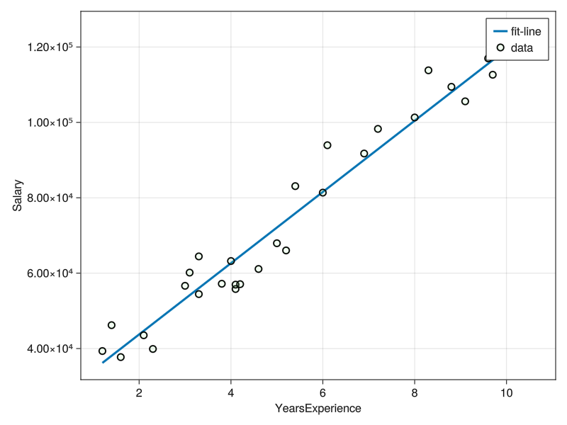

Code
include("../utils.jl")
import MLJ:fit!,fitted_params
using GLMakie,MLJ,CSV,DataFramesexplore
YearsExperienceandSalaryrelationship
dataset: kaggle salary dataset
数据类型需要做转换: to_ScienceType(d)=coerce(d,:YearsExperience=>Continuous,:Salary=>Continuous)
using MLJLinearModels.jl 🔗
include("../utils.jl")
import MLJ:fit!,fitted_params
using GLMakie,MLJ,CSV,DataFramesdf=CSV.File("./data/salary_dataset.csv") |> DataFrame |> dropmissing;
first(df,5)| Row | Column1 | YearsExperience | Salary |
|---|---|---|---|
| Int64 | Float64 | Float64 | |
| 1 | 0 | 1.2 | 39344.0 |
| 2 | 1 | 1.4 | 46206.0 |
| 3 | 2 | 1.6 | 37732.0 |
| 4 | 3 | 2.1 | 43526.0 |
| 5 | 4 | 2.3 | 39892.0 |
to_ScienceType(d)=coerce(d,:YearsExperience=>Continuous,:Salary=>Continuous)
new_df=to_ScienceType(df)
first(new_df,5)| Row | Column1 | YearsExperience | Salary |
|---|---|---|---|
| Int64 | Float64 | Float64 | |
| 1 | 0 | 1.2 | 39344.0 |
| 2 | 1 | 1.4 | 46206.0 |
| 3 | 2 | 1.6 | 37732.0 |
| 4 | 3 | 2.1 | 43526.0 |
| 5 | 4 | 2.3 | 39892.0 |
X=MLJ.table(reshape(new_df[:,2],30,1))
y=Vector(new_df[:,3])
show(y)[39344.0, 46206.0, 37732.0, 43526.0, 39892.0, 56643.0, 60151.0, 54446.0, 64446.0, 57190.0, 63219.0, 55795.0, 56958.0, 57082.0, 61112.0, 67939.0, 66030.0, 83089.0, 81364.0, 93941.0, 91739.0, 98274.0, 101303.0, 113813.0, 109432.0, 105583.0, 116970.0, 112636.0, 122392.0, 121873.0] LinearRegressor = @load LinearRegressor pkg=MLJLinearModels
model=LinearRegressor()
mach = MLJ.fit!(machine(model,X,y))
fp=MLJ.fitted_params(mach) #学习的模型参数[ Info: For silent loading, specify `verbosity=0`.
[ Info: Training machine(LinearRegressor(fit_intercept = true, …), …).
┌ Info: Solver: MLJLinearModels.Analytical
│ iterative: Bool false
└ max_inner: Int64 200import MLJLinearModels ✔(coefs = [:x1 => 9449.962321455077],
intercept = 24848.203966523164,) a=fp.coefs[1,1][2]
b=fp.intercept
line_func(t)=a*t+bline_func (generic function with 1 method)xs=range(extrema(new_df[:,2])...,200)
fig=Figure()
ax=Axis(fig[1,1];xlabel="YearsExperience",ylabel="Salary")
lines!(ax,xs,line_func.(xs);label="fit-line",linewidth=3)
scatter!(ax,new_df[:,2],new_df[:,3];label="data",marker_style...)
axislegend(ax)
fig